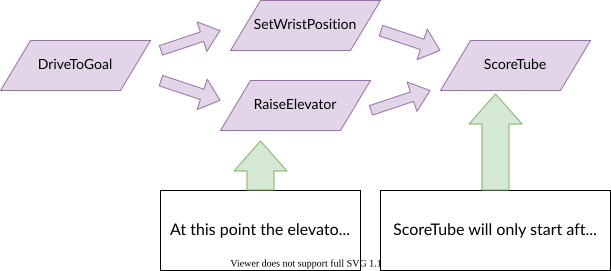

10.2 Autonomous on the XRP#
Course path · Part 5: Autonomous · step 26 of 46
Practice it in: Lab 7: Timed Autonomous, Lab 8: Gyro Turns and Encoder Distances
Why it matters#
The first 15 seconds of every match have no driver input. The robot runs entirely on code. Autonomous points often decide close matches, and a reliable auto is one of the things alliance captains look for when picking partners.
In this lesson you'll program your XRP (Lesson 10.1) to drive on its own, step by step: first a simple timed drive, then driving by measured distance, then turning by the gyro, then multi-step routines that also move the arm, and finally a dashboard menu so the drive team can pick a routine before each match.
Read this#
Walkthrough#
How autonomous starts and stops#
In the Command Robot template, Robot.java already handles this:
- When autonomous begins,
autonomousInit()callsrobotContainer.getAutonomousCommand()and schedules whatever it returns. - The scheduler runs that command every loop.
- When teleop begins,
teleopInit()cancels it, in case it's still running.
So your whole job is to make getAutonomousCommand() return the right command. That command is usually built from smaller commands you already have.
Building routines from small commands#
Command compositions chain commands together like sentences:
| Composition | Meaning | Ends when |
|---|---|---|
a.andThen(b) |
Run a, then b |
b ends |
a.alongWith(b) |
Run both at the same time | both end |
a.raceWith(b) |
Run both at the same time | either ends (the other is canceled) |
a.deadlineFor(b) |
Run both at the same time | a ends (b is canceled) |
a.withTimeout(2.0) |
Run a, but give up after 2 seconds |
a ends or time runs out |
a.until(condition) |
Run a until condition is true |
a ends or the condition is true |
Compositions let several things happen at once, then wait for all of them before moving on:

Moving the wrist and elevator in parallel, then scoring once both are done. From the WPILib docs source, concurrent-commands.drawio.svg (CC BY 4.0).

The Commands class has matching helpers for longer lists:
Commands.sequence(a, b, c) // a, then b, then c
Commands.parallel(a, b) // all at once, until all end
Commands.race(a, b) // all at once, until any ends
Commands.deadline(a, b, c) // all at once, until the first one (a) ends
Commands.waitSeconds(1.0) // pause
Parallel commands can't share a subsystem
Two drivetrain commands alongWith each other is an error: both require the drivetrain. Parallel commands must use different subsystems, like driving while moving the arm.
Version 1: a timed auto#
The simplest auto drives at a fixed speed for a fixed time. Add this method to XRPDrivetrain.java, above periodic():
/** Drives at a fixed speed for a set time, then stops. */
public Command driveForSecondsCommand(double speed, double seconds) {
return run(() -> arcadeDriveRaw(speed, 0))
.withTimeout(seconds)
.finallyDo(() -> stop())
.withName("Drive " + seconds + " s");
}
.finallyDo(...) runs when the command ends for any reason: finished, timed out, or canceled. Use it to make sure motors always stop.
Then make getAutonomousCommand() in RobotContainer.java return it:
public Command getAutonomousCommand() {
return m_drivetrain.driveForSecondsCommand(0.6, 2.0);
}
Run it: in the Sim GUI, select Autonomous, then enable. Try it in simulation first, then on the real XRP on the floor.
Timed autos are unreliable
The same motor output moves the robot different distances depending on battery charge, wheel wear, the floor, and weight. On an XRP you'll see it right away: fresh AAs and tired AAs drive very different distances. Use timed autos to get started, then switch to distance.
Version 2: drive by distance#
With encoders, the robot can drive until it has actually gone the right distance:
private double m_distanceTarget = 0.0; // where the current drive should stop, in meters
/** Drives straight until the robot has gone this far. Negative = backward. */
public Command driveDistanceCommand(double meters, double speed) {
double direction = Math.signum(meters);
return runOnce(() -> m_distanceTarget = getAverageMeters() + meters)
.andThen(run(() -> arcadeDriveRaw(direction * speed, 0)))
.until(() -> direction > 0
? getAverageMeters() >= m_distanceTarget
: getAverageMeters() <= m_distanceTarget)
.withTimeout(10.0) // safety: stop even if an encoder is unplugged
.finallyDo(() -> stop())
.withName("Drive " + meters + " m");
}
Reading it line by line:
- Remember where to stop: here + the distance, so it works wherever the robot starts.
- Then drive at
speed, in the direction ofmeters. - Stop as soon as the measured distance passes the target.
- Give up after 10 seconds, in case an encoder is unplugged and the distance never changes.
- Always stop the motors at the end.
This is much more consistent than a timer, but it still overshoots a little, because the robot is moving when it reaches the target and takes time to stop. In Lesson 12 you'll replace the fixed speed with a PID controller that slows down smoothly as it arrives.
Version 3: turn by the gyro#
Turning with a timer is even worse than driving with one. The XRP's gyro measures how far it has actually turned:
private double m_turnTarget = 0.0; // where the current turn should stop, in degrees
/** Turns in place by this many degrees. Positive = left (counterclockwise). */
public Command turnDegreesCommand(double degrees, double speed) {
double direction = Math.signum(degrees);
return runOnce(() -> m_turnTarget = getHeadingDegrees() + degrees)
.andThen(run(() -> arcadeDriveRaw(0, direction * speed)))
.until(() -> direction > 0
? getHeadingDegrees() >= m_turnTarget
: getHeadingDegrees() <= m_turnTarget)
.withTimeout(5.0)
.finallyDo(() -> stop())
.withName("Turn " + degrees + " deg");
}
It's the same shape as driveDistanceCommand: remember a target, move, stop when you pass it. Positive rotation in arcadeDrive turns left, which makes the heading go up.
Why turns overshoot
The XRP is still spinning when the gyro reaches the target. Turning slower (0.4 instead of 0.7) overshoots less. Try both and measure.
Version 4: an arm, and multi-step routines#
The XRP's arm is a servo on the Servo 1 port. Give it a small subsystem, subsystems/Arm.java:
package frc.robot.subsystems;
import edu.wpi.first.wpilibj.xrp.XRPServo;
import edu.wpi.first.wpilibj2.command.Command;
import edu.wpi.first.wpilibj2.command.Commands;
import edu.wpi.first.wpilibj2.command.SubsystemBase;
import frc.robot.Constants.ArmConstants;
import frc.robot.telemetry.Telemetry;
import frc.robot.telemetry.TelemetryTable;
public class Arm extends SubsystemBase {
// The arm's servo: give it an angle from 0 to 180 degrees and it goes there
private final XRPServo m_servo = new XRPServo(ArmConstants.kServoChannel);
private final TelemetryTable m_telemetry = Telemetry.getTable("Arm");
/** Moves the arm to an angle, then waits half a second for it to get there. */
public Command setAngleCommand(double degrees) {
return runOnce(() -> m_servo.setAngle(degrees))
.andThen(Commands.waitSeconds(0.5))
.withName("Arm to " + degrees + " deg");
}
@Override
public void periodic() {
m_telemetry.log("Angle (deg)", m_servo.getAngle());
}
}
A servo has its own position control built in, so the code only says where. It can't report where it really is: getAngle() returns the angle it was told, which is why the command waits half a second.
Now combine everything. In RobotContainer.java, build each routine in its own method:
/** Drive forward 0.5 m, raise the arm, back up. */
private Command deliverAuto() {
return Commands.sequence(
m_arm.setAngleCommand(0), // arm down
m_drivetrain.driveDistanceCommand(0.5, 0.6), // drive out
m_arm.setAngleCommand(90), // "score"
m_drivetrain.driveDistanceCommand(-0.5, 0.6) // back up
).withName("Deliver");
}
/** One side of a square: drive 0.4 m, then turn left 90 degrees. */
private Command squareSide() {
return m_drivetrain.driveDistanceCommand(0.4, 0.6)
.andThen(m_drivetrain.turnDegreesCommand(90, 0.5));
}
/** Four sides: the robot should end where it started. */
private Command squareAuto() {
return Commands.sequence(squareSide(), squareSide(), squareSide(), squareSide())
.withName("Square");
}
/** Raise the arm while driving: the drive is the deadline. */
private Command driveAndRaiseAuto() {
return Commands.deadline(
m_drivetrain.driveDistanceCommand(0.5, 0.5),
m_arm.setAngleCommand(90)
).withName("Drive and Raise");
}
deadline ends when the drive finishes. The arm runs at the same time, because it's a different subsystem.
Write autos as named methods
Each call to a method like squareSide() makes a fresh command object. Reusing one command object in two places in a routine causes an error, because a command can only belong to one composition.
Let the drive team choose: Selectable#
Different strategies need different autos. A Selectable (Lesson 6.1) puts a dropdown menu in Elastic. Here's the finished RobotContainer.java:
package frc.robot;
import edu.wpi.first.math.MathUtil;
import edu.wpi.first.wpilibj.xrp.XRPOnBoardIO;
import edu.wpi.first.wpilibj2.command.Command;
import edu.wpi.first.wpilibj2.command.Commands;
import edu.wpi.first.wpilibj2.command.button.CommandXboxController;
import edu.wpi.first.wpilibj2.command.button.Trigger;
import frc.robot.Constants.OIConstants;
import frc.robot.subsystems.Arm;
import frc.robot.subsystems.XRPDrivetrain;
import frc.robot.telemetry.Selectable;
import frc.robot.telemetry.Tunables;
public class RobotContainer {
// The robot's subsystems and the XRP's USER button and LED
private final XRPDrivetrain m_drivetrain = new XRPDrivetrain();
private final Arm m_arm = new Arm();
private final XRPOnBoardIO m_onboardIO = new XRPOnBoardIO();
// An Xbox controller, or the Sim GUI's keyboard, in Joystick 0
private final CommandXboxController m_driver =
new CommandXboxController(OIConstants.kDriverControllerPort);
// The autonomous menu in Elastic
private final Selectable<Command> m_autoChooser = new Selectable<>();
public RobotContainer() {
configureBindings();
m_autoChooser.addDefault("Do nothing", Commands.none());
m_autoChooser.add("Drive 2 s (timed)", m_drivetrain.driveForSecondsCommand(0.6, 2.0));
m_autoChooser.add("Drive 0.5 m", m_drivetrain.driveDistanceCommand(0.5, 0.6));
m_autoChooser.add("Deliver", deliverAuto());
m_autoChooser.add("Square", squareAuto());
m_autoChooser.add("Drive and raise", driveAndRaiseAuto());
Tunables.publish("Auto", m_autoChooser); // shows up as /Tunables/Auto
}
private void configureBindings() {
// One-stick arcade: left stick up/down drives, left/right turns
m_drivetrain.setDefaultCommand(m_drivetrain.arcadeDriveCommand(
() -> -processAxis(m_driver.getLeftY()) * speedScale(),
() -> -processAxis(m_driver.getLeftX()) * speedScale()));
// A and B move the arm
m_driver.a().onTrue(m_arm.setAngleCommand(0));
m_driver.b().onTrue(m_arm.setAngleCommand(90));
// The XRP's USER button puts the robot back at the start of the field map
new Trigger(m_onboardIO::getUserButtonPressed).onTrue(m_drivetrain.resetPoseCommand());
}
/** Deadband: treat a stick that's almost centered as exactly centered. */
private static double processAxis(double raw) {
return MathUtil.applyDeadband(raw, OIConstants.kDeadband);
}
/** Slow mode: hold the right bumper for fine control. */
private double speedScale() {
return m_driver.rightBumper().getAsBoolean() ? OIConstants.kSlowModeScale : 1.0;
}
/** Drive forward 0.5 m, raise the arm, back up. */
private Command deliverAuto() {
return Commands.sequence(
m_arm.setAngleCommand(0),
m_drivetrain.driveDistanceCommand(0.5, 0.6),
m_arm.setAngleCommand(90),
m_drivetrain.driveDistanceCommand(-0.5, 0.6)
).withName("Deliver");
}
/** One side of a square: drive 0.4 m, then turn left 90 degrees. */
private Command squareSide() {
return m_drivetrain.driveDistanceCommand(0.4, 0.6)
.andThen(m_drivetrain.turnDegreesCommand(90, 0.5));
}
/** Four sides: the robot should end where it started. */
private Command squareAuto() {
return Commands.sequence(squareSide(), squareSide(), squareSide(), squareSide())
.withName("Square");
}
/** Raise the arm while driving: the drive is the deadline. */
private Command driveAndRaiseAuto() {
return Commands.deadline(
m_drivetrain.driveDistanceCommand(0.5, 0.5),
m_arm.setAngleCommand(90)
).withName("Drive and Raise");
}
public Command getAutonomousCommand() {
return m_autoChooser.getSelected();
}
}
The drive team picks a routine in Elastic (Tunables → Auto, shown as a ComboBox Chooser) before the match. Make "Do nothing" the default, so a robot whose drive team forgot to choose sits still instead of running a routine meant for a different starting spot.
Testing autos#
- In simulation first (XRP Client off). Watch the robot on the field map and the command names. Does each step start and end when you expect? Does the square close?
- Wheels off the table, XRP Client on: check every step runs in order and the motors stop at the end.
- On the floor, in open space, with your hand ready on the Sim GUI's Disabled button. Put a tape mark where the robot starts so every test starts the same way.
- Test with tired batteries too. That's what you'll have after an hour of practice.
| Run | Auto | Where it ended vs. where it should (cm) |
|---|---|---|
| 1 | Drive 2 s (timed) | |
| 2 | Drive 0.5 m | |
| 3 | Square |
Try it#
Have the West Coast Drive?
Lab 7 and Lab 8 build the same timed, distance, and gyro autos on the full-size robot.
- Add
driveForSecondsCommandand run it in simulation, then on the XRP - Add
driveDistanceCommandand measure how far past 0.5 m it stops, at speeds 0.4, 0.6, and 0.8 - Add
turnDegreesCommandand measure how far past 90° it turns - Add the
Armsubsystem and move it with A and B - Add the
Selectableand run every auto from Elastic - Run the square three times. Does it close? Fill in the table.
- Challenge: make
driveDistanceCommandslow down for the last 0.1 m, like a two-speed turn - Challenge: use the line sensor (
XRPReflectanceSensor) to drive until the XRP reaches a strip of black tape
Check yourself#
What's the difference between andThen and alongWith?
andThen runs commands in sequence. alongWith runs them at the same time, ending when both are done.
What's the difference between race and deadline?
A race ends when any of its commands ends. A deadline ends when one specific command (the first one) ends.
Why are timed autos unreliable, especially on an XRP?
The same motor output moves the robot different distances depending on battery charge, the floor, and wear. AA batteries lose voltage quickly, so the XRP's timed drives change a lot.
Why does driveDistanceCommand remember a target instead of resetting the encoders?
So it works from wherever the robot is, and so it doesn't disturb the odometry, which needs the encoders to keep counting.
Why does setAngleCommand wait half a second?
A servo can't report where it really is. The wait gives it time to get there before the next step.
Why should 'Do nothing' be the default auto?
If the drive team forgets to pick, the robot stays still instead of running a routine meant for a different starting position.